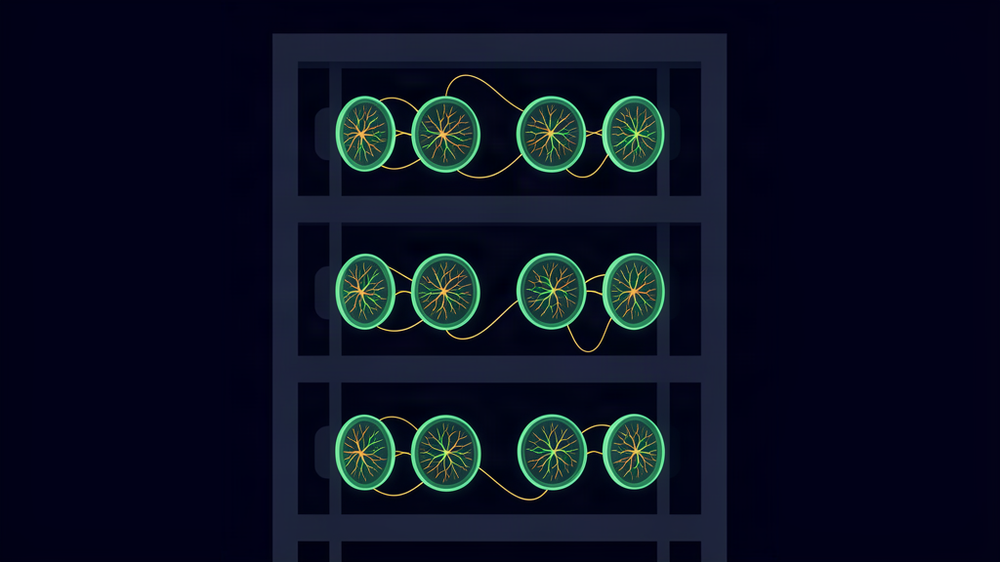

16 Million Living Neurons, 30 Watts: The Energy Story Behind Singapore's Biological Server Rack

The tweet that made me check the numbers
A tweet crossed my timeline this week: Singapore switched on the world's first biological server rack — 20 CL1 units, roughly 16 million living human neurons grown from stem cells, mounted on microelectrode chips and running as an integrated rack at the National University of Singapore's Life Sciences Institute, with data-centre operator DayOne and Melbourne-based Cortical Labs.
The wow-fact is the neurons. The *actual* story is the power draw buried in the reporting: a single CL1 biological unit draws roughly 30 watts — including its entire life-support system — compared to upwards of 700 watts for a high-end NVIDIA H100.
That is not a curiosity. That is a 20× difference in the cost of thinking, and it reframes what the AI energy debate is actually about.
Core thesis
The neurons are a story. The watts are the point. While the industry fights over ever-bigger GPU clusters and every new data-centre power deal, a proof of concept just came online that runs biological neural networks as *compute* — and the number that matters for the next decade of AI economics is 30W, not 16 million.
What CL1 actually is
Cortical Labs grows neurons from human stem cells and places them on a silicon platform containing microelectrode arrays. Electrodes send electrical signals into the network and record what the cells do. Its biOS operating system lets software interact with the neural network in real time — information goes in as electrical stimulation, the neurons' activity comes out as a usable response. The CL1 keeps the cultures alive with an internal life-support system for up to six months.
This is the commercial evolution of the DishBrain experiments, where ~800,000 human and mouse neurons learned to play Pong on a CMOS chip. The Singapore rack chains twenty CL1 units into something that looks like infrastructure — the world's first independently operated biologically integrated server rack, demonstrated to 80+ guests on August 6.
The claim of ~16 million neurons is an estimate: ~800,000 per unit × 20 units. Other reporting puts each unit at "at least 200,000" neurons (Straits Times), which would make the rack total as low as ~4 million — so treat 16 million as the optimistic ceiling. NUS confirms the 20-unit configuration but does not independently publish a rack-level neuron count.
<figure>
<div class="fig-title">FIG 3 · <b>the watts and the scale, honestly</b></div>
<svg viewBox="0 0 920 330" role="img" aria-label="CL1 30 watts versus H100 700 watts; neuron scale versus human brain">
<text x="40" y="34" font-size="13" fill="#e6ebf2" font-weight="700">Power per unit</text>
<rect x="40" y="56" width="14" height="30" rx="6" fill="#45d6a0"/>
<text x="66" y="77" font-size="14" fill="#e6ebf2">CL1 · 30 W</text>
<rect x="40" y="104" width="340" height="30" rx="6" fill="#93a1b5" opacity="0.55"/>
<text x="60" y="125" font-size="14" fill="#e6ebf2">NVIDIA H100 · ~700 W</text>
<text x="40" y="160" font-size="11" fill="#93a1b5">incl. full life support vs. GPU TDP — not yet a workload benchmark</text>
<line x1="470" y1="30" x2="470" y2="230" stroke="#223046" stroke-width="1"/>
<text x="500" y="34" font-size="13" fill="#e6ebf2" font-weight="700">Neurons in play</text>
<circle cx="560" cy="112" r="10" fill="#45d6a0"/><text x="580" y="108" font-size="12" fill="#e6ebf2">1 CL1 unit</text><text x="580" y="124" font-size="11" fill="#93a1b5">~200k–800k</text>
<circle cx="560" cy="158" r="17" fill="#5cc8ff"/><text x="588" y="154" font-size="12" fill="#e6ebf2">the rack (20 units)</text><text x="588" y="170" font-size="11" fill="#93a1b5">~4M–16M</text>
<circle cx="560" cy="200" r="118" fill="none" stroke="#f5b642" stroke-width="1.5" stroke-dasharray="4 4"/>
<text x="700" y="204" font-size="12" fill="#e6ebf2">human brain · ~86B</text><text x="700" y="220" font-size="11" fill="#f5b642">rack ≈ 1/5,000 of a brain</text>
<text x="40" y="300" font-size="11" fill="#93a1b5">Circle not to scale; dashed circle cropped. Sources: Straits Times (at least 200,000 neurons/unit; 30 W incl. life support) · Cortical Labs CL1 specs · NUS Medicine (20-unit rack, Aug 6, 2026).</text>
</svg>
<figcaption>The honest read: 30 W is real and verified; 16 M neurons is the optimistic ceiling (~4 M on the lower figure); GPU parity is unproven. The signal is direction, not replacement.</figcaption>
</figure>
Do the honest math before you get excited
The 16-million figure sounds vast. It is not. A human brain runs roughly 86 billion neurons. Sixteen million is about 1/5,000 of a brain — distributed across twenty racks-worth of hardware, each with its own life support.
And the honest caveats:
- No GPU parity has been demonstrated. The Singapore prototype has not shown it can replace GPUs or beat conventional AI infrastructure on mainstream workloads. The energy-efficiency promise is a *potential*, not a proven large-scale result.
- Living hardware is fragile. These processors need temperature control, fluid balance, nutrients — biological care, on a lifespan measured in months, not the years silicon keeps.
- The use cases are targeted, not universal: drug discovery, fraud detection, adaptive robotics, energy optimisation — problems where biological systems may genuinely learn from less data and adapt to changing conditions.
So no, biological computing is not replacing your GPU cluster. That was never the serious claim, and reading it that way is how you miss the real signal.
Why the 30-watt number matters for sovereign AI
Here is the part the tweet's audience mostly skips: energy is the binding constraint of AI infrastructure, and it is getting worse. Every frontier-model data centre is a power-purchase negotiation. Inference cost is the reason hosted APIs price per token. Whoever pays the electricity bill decides who gets to run models — which is precisely the centralisation dynamic sovereign AI exists to break.
A substrate that does useful work at 30W per unit — even for a narrow slice of problems like fraud detection and adaptive robotics — changes the shape of that argument. It pushes compute back toward the edge, toward hardware a person or a small company can actually own and run. That is the same direction as the local-first inference wave: the frontier increasingly runs *on your box, on your meter, under your control*.
The FreeToken engines running frontier-class models on a gaming PC proved the model side of that story: open weights, local hardware, no API key. Biological compute is a slower, stranger chapter of the same plot — the hardware itself becoming something a lab, not a hyperscaler, can stand up.
Read the value per watt, not the wonder
Delta V runs on a JouleWork principle: max value per token, per turn, per hour. The biological rack is a JouleWork argument written in watts — a different chemistry trying to do the same thing: more useful intelligence per unit of energy.
The honest takeaway is clinical:
- Watch the watts, not the wonder. If biological inference reaches even a fraction of its claimed efficiency on real workloads, AI economics shift at the margin — and the margin is where sovereignty lives.
- It is a proof of concept. Sixteen million neurons is not a brain; life-support is a maintenance bill silicon never pays; mainstream parity is unproven.
- It is a signal about direction. The industry's freight-train answer to AI's energy problem is more power. This rack is one of the first credible "less power, different substrate" answers — and the economics of running intelligence will decide which one wins.
The neurons are remarkable. The 30 watts are the revolution.
Sources: TechRepublic — "Singapore Switches On Biological Computing Rack With Living Human Neurons" (2026) · Times of India — "Singapore unveils world-first biological data centre" (2026-08) · Interesting Engineering — "World-first biological data center" (2026) · Cortical Labs CL1 disclosures · tweet @SmartScience (2026-08-27)